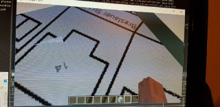
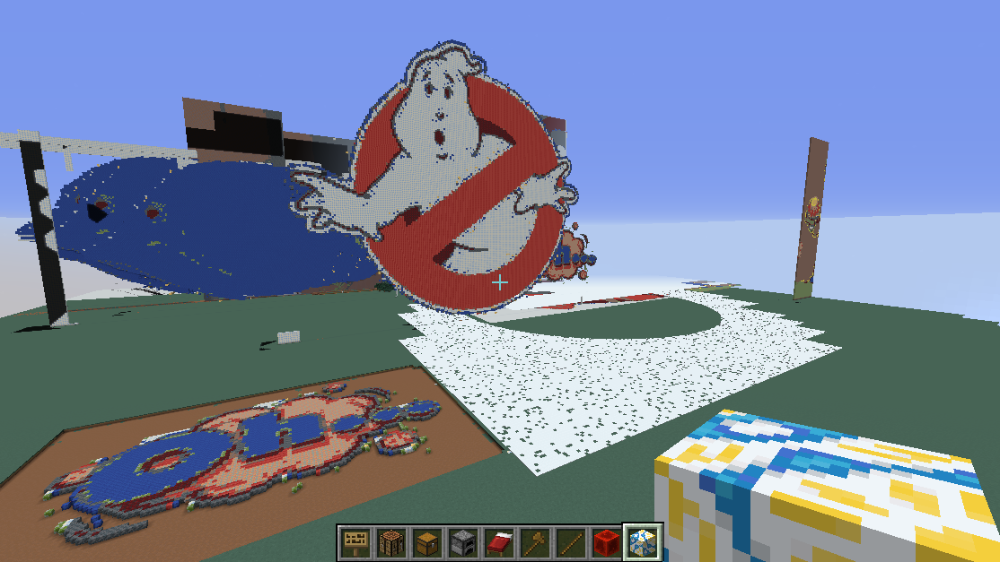
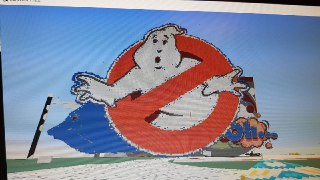

geomaptools minecraft plugin

Download geotools Minecraft Plugin! Minecraft Bukkit-Plugin für-
\t
- Geographic-Map-Import, \t
- Image-Import und \t
- schnelles Bauen


Ein weiteres Feature ist der Import von Bildern in Minecraft. Sie können ein Verzeichnis definieren, aus dem Sie Bilder in Ihre Minecraft-Welt importieren können. Die Bilder können auf dem Boden platziert werden oder aufrecht stehen. Zum Löschen von Rändern der Bilder wurde eine Blocklöschfunktion implementiert, mit der alle Blöcke einer angeklickten Blockfarbe gelöscht werden. Einige Quickbuild-Funktionen sind ebenfalls enthalten. Folgende Commands sind verfügbar: gspur: description: Mache eine Spur aus Material. [material = coal,gold,diamond,dirt,fence,glass,sand,grass,redstoneblock,glowstone,gravel,poweredrail,potato,apple] goff: description: geoTools off for <player> gquad: description: Mache grosse Block quader usage: /<command> [material] breite hoehe tiefe gforward: description: Setzt eine 1 Block hohe Mauer geradeaus. usage: /<command> [Material] [laenge der Mauer] [hoehe der Mauer] gmap: description: Setzt eine Karte ein. usage: /<command> <dateiname> <boden = true, hochkant = false> gdelete: description: loescht alle angrenzenden Bloecke, die dasselbe Material haben, wie der selektierte. In der Hand muss das Material auch sein. (noch) usage: /<command> radius gbuildalong: description: baut mit dem geclickten material des geclickten blocks eine wand mit hoehe h im radius r auf dem geclickten Block und alen angrenzenden Blöcken derselben Farbe/Material usage: /<command> radius hoehe